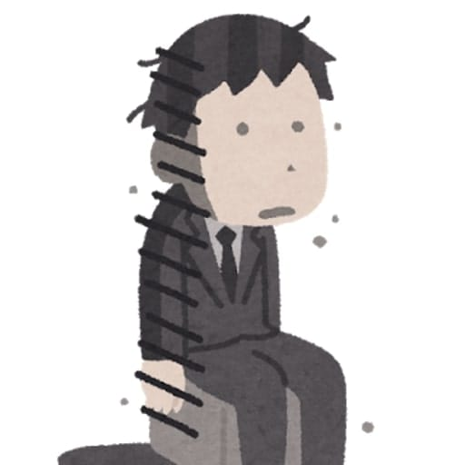

Profile
| 名前 | 山下 智司（yamaP） |
|---|---|
| 住所 | 都内（でも最近リモートワーク流行ってるのでどこでもいいのでは） |
| 趣味 | Youtube・ゲーム |
| 自分について |
ゲーム（ライフ） ＞ 生活 ＞＝ 仕事（ワーク） わりかし生活を犠牲にしてゲームしてますが、生きて行くためにはお金を稼がないと行けないのでお仕事もします（定時退社が理想） 本業がゲームで副業がエンジニアってよく言われます。間違ってない、でもエンジニアで手を抜いてるわけもなく第２の人生はエンジニアだと思ってるので！！ ガチエンジニア業の人よりお安い給料にはなりがちだけど毎日定時で帰ったりライフが充実してるならそれでも構わないと思ってます。 |
| 職業 | エンジニア/(ゲーマー) |
| 連絡先 | twitterまで |